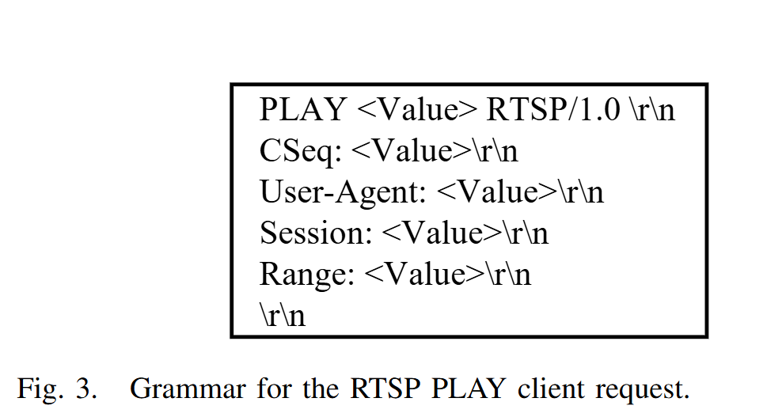
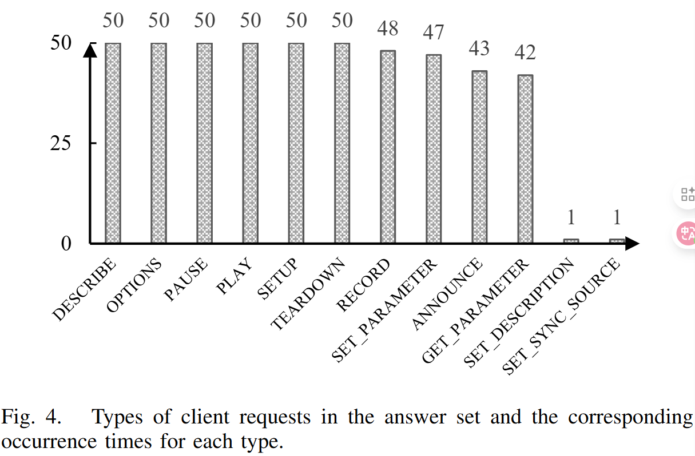
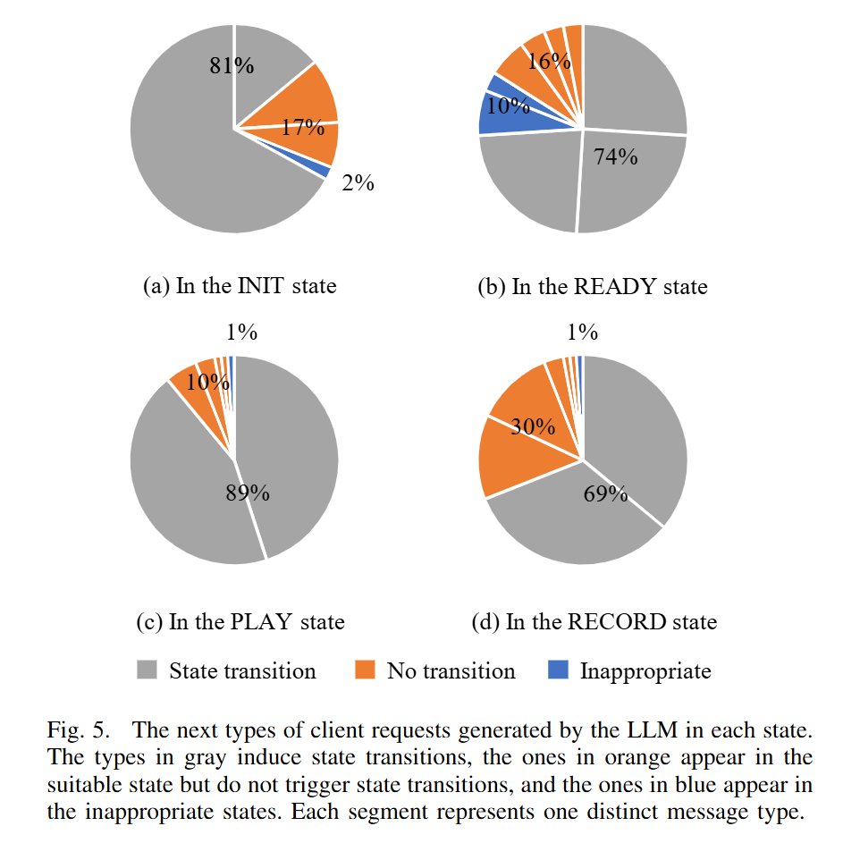
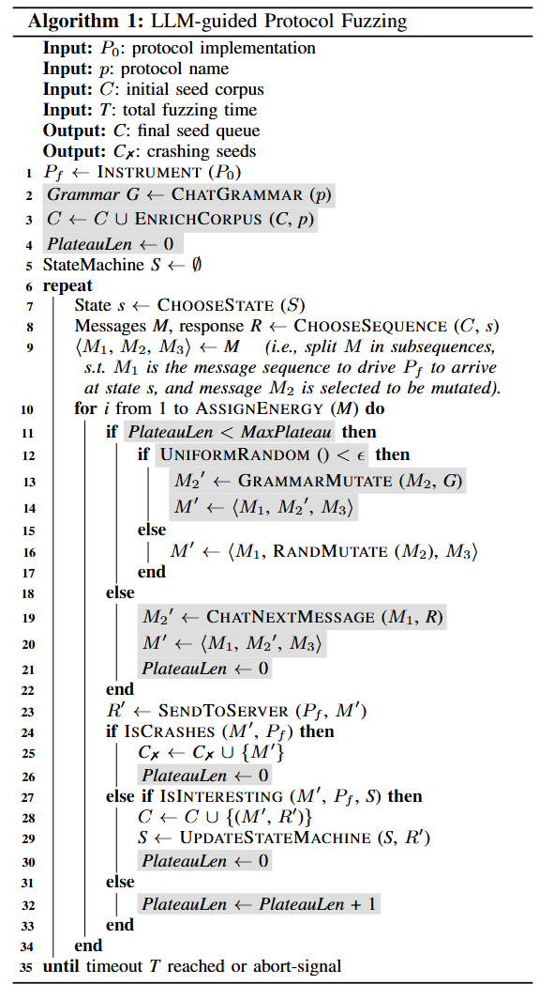
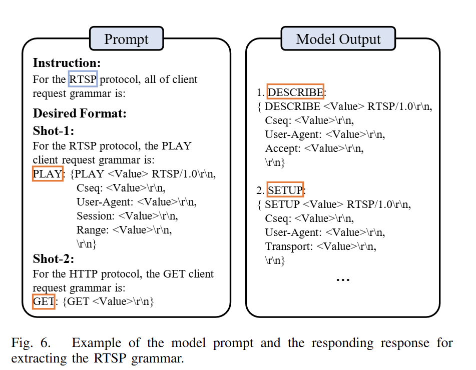
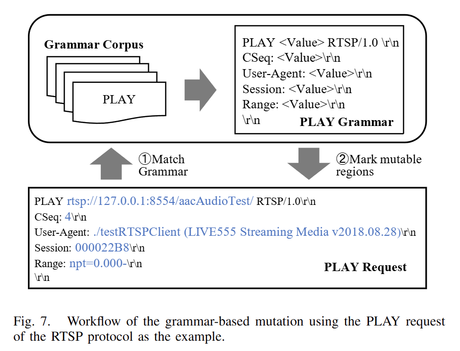
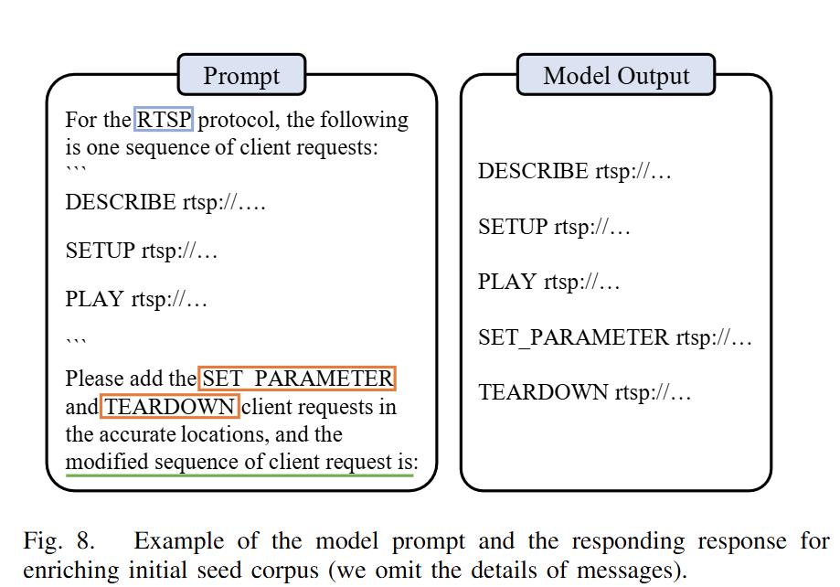
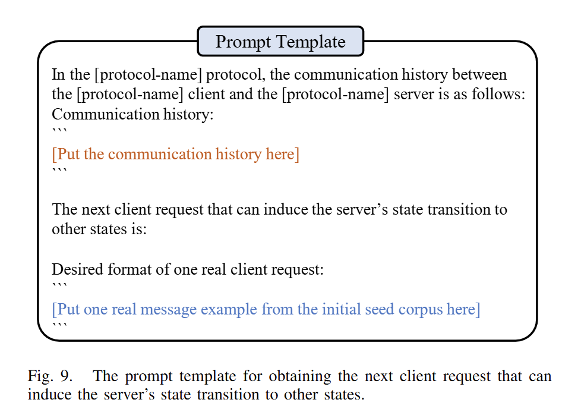

本文主要工作：
-
实现了一个LLM引导的协议模糊器。通过询问LLM来实现动态状态推断，以更深入地覆盖协议软件。
-
提出三种基于LLM的模糊器变异策略，每种策略解决了协议模糊测试的特定挑战。本文实现了灰盒模糊测试算法并命名为CHATAFL。目前该工具已在github开源。
-
本中实验结果表明，CHATAFL在协议状态空间和覆盖率要比AFLNET和NSFUZZ更加有效。还发现了9个未知漏洞。
现有协议模糊测试的Challenges：
-
C1：依赖初始种子文件
-
C2：未知的协议数据包结构
-
C3：未知的状态空间
Case Study
-
用例：Live555 （RTSP），实现标准：RFC 2326
-
基准：Profuzzbench
-
LLM：ChatGPT 3.5
A. 提高消息语法：质量和多样性
首先，需要构造一套标准（ground-truth）语法，作者对RFC2326协议标准研读，人工提取对应的语法。最终提取了10中RTSP特定的客户端请求的真实语法。每种请求由2到5个头部组成。

如图3所示，PLAY的语法由4个头部组成。并且某些请求具有特定的头部字段。

从LLM中随机抽取50个RTSP协议答案来合并为一个答案集。如图4所示，LLM为10种消息类型生成语法。预计这些消息类型会出现在LLM的40多个答案中。
还验证了LLM生成语法的质量，其中10种消息类型中的9种于RFC中提取的真实语法相同，其中1种是在PLAY中忽略了一些可选字段，如range。
进一步检查PLAY语法，其中35个答案中准求生成了包含range语法，另外15个忽略range字段。以上可认为LLM能生成高精度的消息语法能力，可用于指导变异算法。
结论：LLM 为所有类型的 RTSP 客户端请求的结构生成与标准协议相匹配的消息，尽管存在一定的随机性。
B、增强种子语料：多样性和有效性
使用LLM将随机的消息添加到给定消息序列中，并评估多样性和有效性。profuzzbench中的RTSP语料仅包含4种消息请求，缺少了其他6种请求，会导致RTSP绝大多数状态未被探索。
但是传统变异生成这6种请求概率较低，作者通过观察AFLNET和NSFUZZ产生的 测试用例，均未发现新的请求类型。因此初始种子集合是重要的。
作者通过LLM来为每种请求类型来生成10条消息，共100条客户端请求。然后验证生成的消息序列是否满足RTSP的状态机请求顺序，若是准确的就将其发送到待测服务器。
其结果表明99%的请求都是满足状态记顺序的。这些请求大约55%可以被服务器直接接受，相应代码为2xx。不接受的消息是因为Live555不接受协议标准中的一些功能，还有就是会话ID不准确，需要调整正确的会话ID。
作者开发了两种结合方式：
1、将服务器响应包含在prompt中，然后请求LLM生成相同类型的消息。这样产生的消息可以直接被服务器接受。
2、尝试将会话ID包含到给定的请求序列中，然后LLM也准确地将相同的值插入到这些消息并生成正确的结果。
结论：LLM可以有效的生成正确的消息并能够丰富初始种子集。
C、包含Interesting的状态转移
为LLM提供模糊器和服务器之间的消息交换，要求它返回一条会导致新状态的消息。作者评估了引起新状态转移的可能性。具体做法是为LLM提供现有的通信历史记录，使服务器能够分别到达每个状态，然后查询LLM以确定下一个可能影响服务器状态的请求。

图5展示了每个状态的结果，灰色表示导致状态转移的消息百分比，橙色表示适当状态但不导致状态转移的消息，蓝色表示直接被服务器拒绝的不正确状态的消息。结论：LLM生成的客户端请求，69%~89%可以引发状态转移，并覆盖了每个状态的所有状态转移。
LLM指导的协议模糊测试

plateau瓶颈NDSS24, 页面 5 本节介绍的LLMPF（LLM- guided protocol fuzzing）方法，通过合并算法一中的灰色组件来增强传统EMPF（mutation-based protocol fuzzing)：（1）通过提示LLM提取语法（第2行），并利用语法来指导模糊突变（第12-14行）（第IV-A节）;
（2）查询LLM以丰富初始种子集（第3行）（第IV-B节）;
（3）利用LLM的能力突破覆盖瓶颈（第4、19-21、26、30和32行）（第IV-C节）。
A、语法指导变异
该节介绍从LLM中提取语法，并利用语法来指导结构变异。主要挑战是LLM生成的响应具有灵活的自然语言结构，模糊器无法直接理解，需要统一LLM的响应格式或者手动转化成所需格式。
1、提取语法
LLM可以通过简单地提供自然语言prompt来执行特定任务，无需额外训练和编码。因此，模糊器投喂prompt给LLM来生成待测协议的消息语法。
作者在prompt工程中采用上下文中的少样本学习（in-context few-shot learning）【1】少样本学习 Few-shot Learning]，这是微调模型的有效方法，该方法需要一些输入和输出示例来增强上下文，使得LLM能够识别prompt语法和输出模式。

图6是一个提取语法的示例，将可变区域替换为 ，使用两个shot来指导LLM正确生成语法。在算法1第二行 Grammar G ← CHATGRAMMAR(p)，本文LLMPF与LLM进行对话获得语法并保存在G中，G将用于整个模糊测试的结构化变异，该操作旨在减少与LLM交互的开销。
2、语法变异

LLMPF通过预提取的语法G来指导变异，变异流程如图7所示。LLMPF维护了一个映射格式的语法语料库。
首先匹配PLAY语法，使用语法第一行作为消息类型的标签。语法对应具体的消息语法，使用消息类型。LLMPF检索响应语法。
随后使用正则表达式将消息中每个头部字段与语法匹配，并将<Value>值标记为高亮的可变区域，LLMPF仅保存这些字段区域确保消息格式有效。
同时也保留了传统变异算法来应对极端情况。
B、丰富初始种子集
几个challenges：
1.如何生成正确上下文信息的新消息？
2.如何最大限度发挥生成消息的多样性？
3.如何使LLM从给定种子文件生成整个修改后的消息序列？
对于C1，LLM可以从提供的消息序列中自动学习上下文信息，将profuzzbench的初始种子作为prompt投喂给LLM，以获取上下文信息。
对于C2，模糊器确定初始种子集缺少哪些请求类型，也就是LLM应该生成什么类型的消息来丰富种子集。利用图6中的语法prompt和模型输出信息来维护一组消息类型 AllTypes = {messageType}，和语法到类型的一个映射 G2T = {grammar → type}。当检测到缺失类型时，利用语法语料库G和G2T来获取现有消息类型集合（Existingtypes），缺少的消息类型在 MissingType = (AllType - ExistingTypes) 中。然后使用LLM生成缺少的类型并插入到初始种子集中。为了避免消息序列过长，在给定消息序列中选择并添加两个缺失类型。

对于C3，为保证消息序列有效性，在后续格式中设计prompt，如“the modified sequence of client requests is:” 。图8给出一个示例，指示LLM在给定序列中插入两种类型消息的prompt：SET PARAMETER 和 TEARDOWN，右侧是修改后的序列。
C、突破覆盖率瓶颈
现有的协议模糊器很可能无法生成合适的消息序列来覆盖所需的状态转换，会导致很大部分状态空间未被探索。这也是一个比较难解决的问题。当模糊器无法探索新的覆盖范围，称为覆盖率瓶颈（coverage plateau）。
本文使用LLM来帮助模糊器突破覆盖率瓶颈，根据模糊器连续生成种子的数量来量化这个持续时间，维护了一个 PlateauLen 的全局变量，来记录连续观察到的无趣种子的数量，如算法1第四行所示。若生成测试用例导致crash或者覆盖率变化，则将这个变量置0，否则该变量+1。若该变量不超过 MaxPlateau（该值由用户指定），LLMPF使用先前介绍的方法来变异，否则认为进入瓶颈。LLMPF将使用LLM来突破瓶颈。

如图9所示，为LLM提供历史通信记录，为确保LLM生成真实的消息，作者从初始种子集提取任何消息来说明所需的格式。随后LLM推断当前状态并生成下一个客户端请求M2’，然后插入消息序列M’中发送到服务器。例如：最初RTSP服务器处于 INIT，收到 M1={SETUP} 后转换为 READY。随后模糊器无法生成有趣的种子而陷入瓶颈，之后通过历史记录 H={SETUP, 200-OK} 来刺激LLM，LLM极有可能回复PLAY或者RECORD消息，会引导服务器过渡到不同的状态。
D、实现
将算法1添加到AFLNET实现了CHATAFL，实现了以上所述的三种策略。
大模型使用GPT-3.5 turbo模型
三种策略为：
-
语法引导变异
-
丰富初始种子集
-
突破覆盖率瓶颈
为了对比消融实验，将CHATAFL拆分为：
-
CL0：AFLNET，禁用所有策略
-
CL1：AFLNET+语法引导变异
-
CL2：AFLNET+语法引导变异+丰富初始种子集
-
CL3：CHATAFL=AFLNET+所有策略
实验
实验目标：
1.状态覆盖
2.代码覆盖
3.消融实验
4.新的BUG
实验对象：
基准模糊器：AFLNET、NSFUZZ
待测目标：Live555、ProFTPD、PureFTPD、Kamailio、Exim、forked-daapd
实验设置：
temperature选用0.5来提取语法并丰富种子集，选用1.5来突破覆盖率瓶颈。
在提取语法时，使用五次重复来检查模型生成的一致性。
对比指标：
- 覆盖率
- 状态覆盖：状态数量，状态转移数量
- 代码覆盖：覆盖分支数量